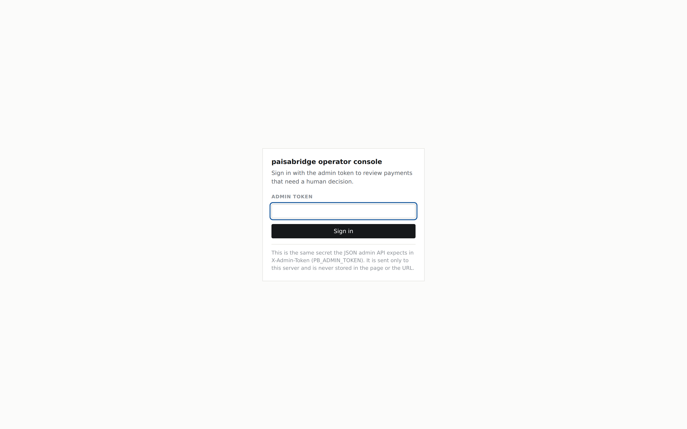
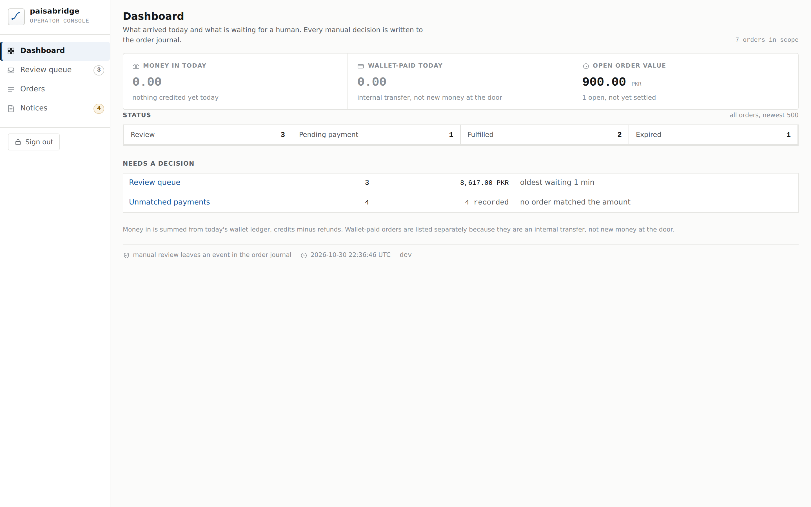
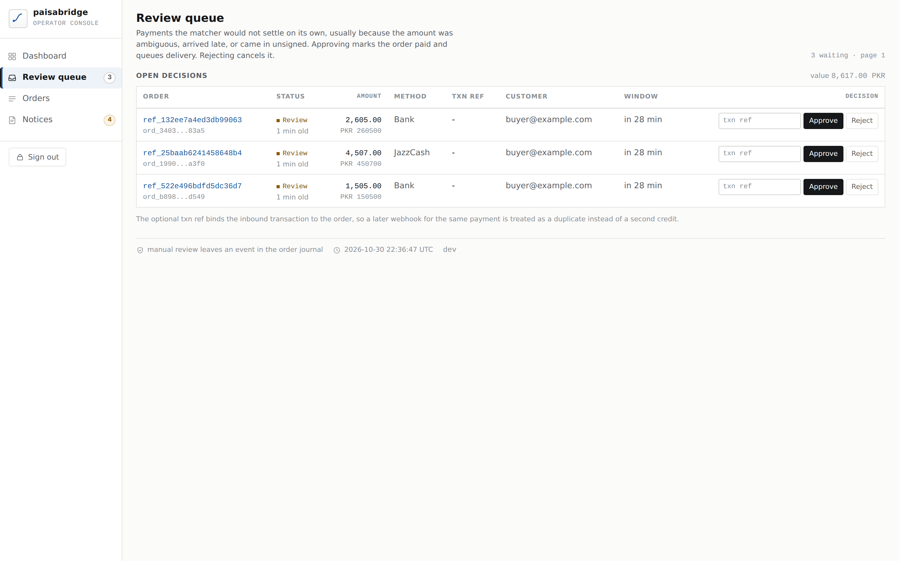
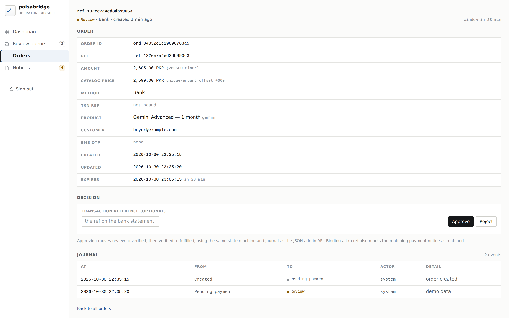
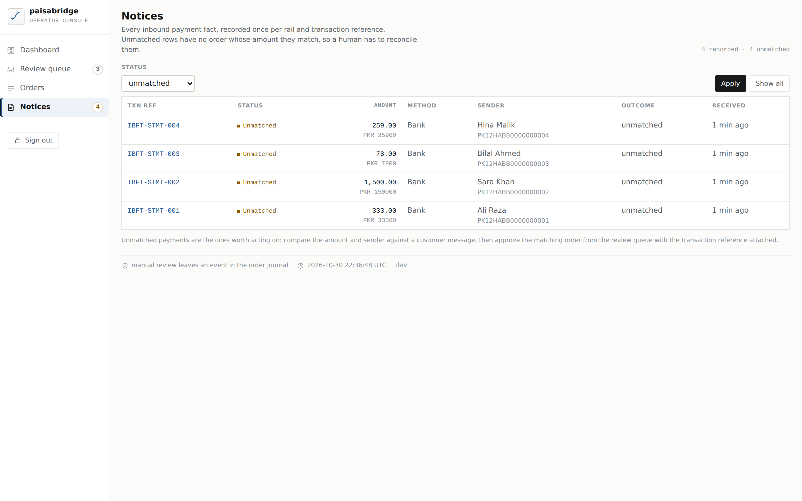
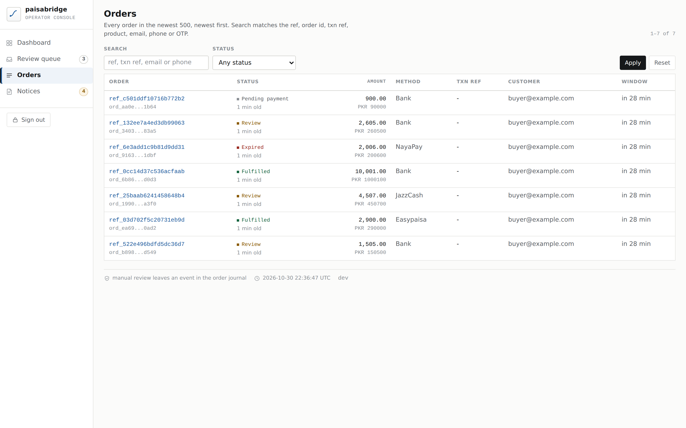
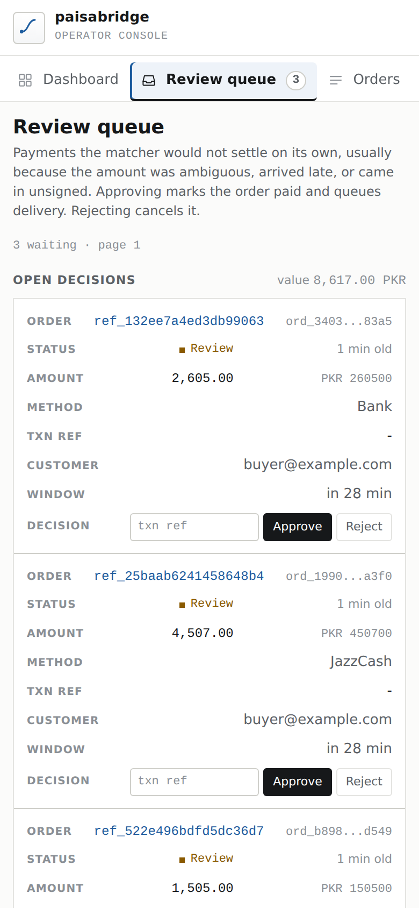

Operator console
The bank rail parks payments in a review queue on purpose. That queue needs a real screen — a human comparing a bank statement against a row should not be editing JSON in a terminal at 2am.
Why it is server-rendered
No build step, no node_modules, no CDN, no JavaScript framework. The console is
html/template plus about 1,200 lines of hand-written CSS, which means
it starts in the same binary as the gateway and works on an air-gapped host. Every
glyph is an inline SVG symbol in a sprite: the page has zero external requests.
Setup
export PB_ADMIN_TOKEN="$(openssl rand -hex 24)"
export PB_ADMIN_ADDR="127.0.0.1:8081"
./paisabridgeThe console gets its own listener rather than a path on the payment port. Bind it to loopback or a VPN interface and it is never reachable from the internet; put it behind SSH forwarding when you need it remotely.
The admin token is the only credential. A successful sign-in sets an
HttpOnly, SameSite=Strict cookie; actions additionally
carry a CSRF token. Behind plain HTTP the cookie would be dropped by the
browser, so the Secure flag is derived from
PB_PUBLIC_URL and can be overridden with
PB_ADMIN_INSECURE_COOKIE for a local run.

Dashboard
Three figures answer the morning question: what arrived, what is internal, and what is still open. Wallet-paid orders are counted separately because moving money from a wallet is not new money at the door.

Review queue
One row per parked payment: reference, status, amount in tabular figures, rail, the transaction reference field, customer, and the countdown. Approve marks the order paid and queues delivery; Reject cancels it. The optional tx-reference binds the inbound transaction to the order so a later webhook for the same payment is treated as a duplicate instead of a second credit.



Orders
The newest 500 orders, newest first, with a status filter and free-text search over ref, order id, transaction reference, product, e-mail, phone and OTP. Search by transaction reference is the one that matters in practice: it is what a bank statement shows.

Order detail
Everything known about one order, including the append-only journal: who changed what, when, and why. Manual decisions are never silent — an approval by a human is a row with an actor and a note.
Unmatched payments
Inbound payments that matched no open order: a typo'd amount, a late transfer, or a payment for a cancelled order. These are the rows an operator reconciles by hand, and the count is surfaced as a badge in the navigation so it is not discovered a week later.
Design notes
13px body, 11px labels, 8px row padding. A console is scanned, not read.
Amounts and identifiers are monospace with tabular figures, right-aligned, so columns line up and a trailing zero cannot hide.
One accent, used for focus and links. Status is a dot plus a word, never colour alone.
Verified with headless Chromium at 1440×900 and 390×844: zero horizontal overflow on every screen, zero console errors, and the table collapses to stacked rows on a phone rather than shrinking the type.
